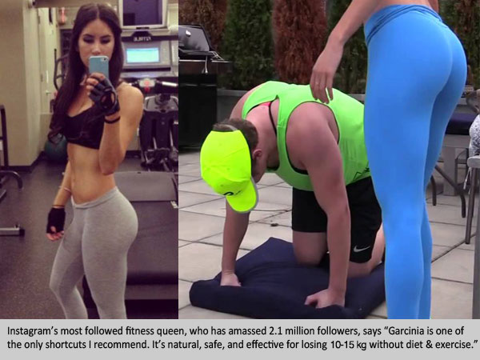

By Helen Crisell |  2,391,558 |
2,391,558 |  656
656
(Fit Mum Daily) - For the past three months our readers have been going crazy over an exotic fruit from South East Asia which is scientifically proven to tear away fat from your body 24 hours a day. It's been helping women in Australia and across the world lose weight in record time. This revolutionary system reviewed below, called by some "The Holy Grail of Weight Loss" has been featured on countless popular TV shows, proven to be safe for ongoing use and best of all - it's totally affordable for anyone.
According to Dr Chen (The guest host on the popular Dr TV show), Garcinia Cambogia works in more than one way, "The first way is it goes in and causes the body to burn glucose, or sugar, and burn fat, mainly in the liver…The second way, the most important way, is it slows the release of sugar into the blood stream. So when you don't have sugar building up in the blood stream, you don't have fat building up because sugar turns to fat. When the two are combined together, you get this synergistic effect that basically burns and blocks and stops fat, but it also is natural and safe."
Waves of top female celebrities have lost a significant amount of body fat with just these 2 diet cleanses. The combined effect is clinically proven to not just rapidly burn fat off your physique but as importantly, to flush out all the destructive toxins in your body and increase your metabolism, all without harming your immune system.
The reason why most diets fail, in our opinion, is that they impose unrealistic restrictions on how you live your life. Some advocate eating tons of protein while others emphasize restricting carbohydrates. In either case, you're left with having to make rather drastic changes to the types of food you eat and when you eat it. In this special report, we take an in-depth look at an emerging and promising weight loss trend that we believe is a game changer, that won't require time in the gym or cutting your calories... and best of all it won't break the bank.
Garcinia Cambogia is a natural extract (HCA) found in Garcinia fruit in South East Asia - scientifically proven to tear away fat from your body. In studies by renowned health research institution UCLA in Los Angeles - Garcinia Cambogia was proven to ignite your metabolism and your body's hidden fat burning capabilities by 318% when taken regularly. However, the problem encountered by many hoping to embrace this miracle dieting system, is that nearly 90% of the imitation Garcinia products out there are NOT pure. Most fluctuate between the 60-70% purity levels - so we tracked down the original and best product - 'Pure Garcinia Cambogia' to understand the difference. Pure Garcinia Cambogia Formula claimed they delivered 95% pure extract to your body so to put it simply - we were intrigued.
To take our study a step further, we also analyzed and discovered that those taking 'Pure Garcinia Cambogia' who experienced the most shocking weight loss results were also the study group that was using the natural detoxifier 'Cleanse Catalyst Plus' as well. Together, testimonials claim the combined usage of these two products led to significant weight loss, more energy and generally a healthier day to-day feeling. If you're skeptical, you're not alone. When we first learned about this weight loss combo, our diet fad radar went off right away.
Nevertheless, as we began to investigate the countless success stories reported by people from all around the globe, we decided that this weight loss trend was worthy of a closer examination. Moreover, we found it of particular interest that these people had not significantly changed their current lifestyles.
Our reader Jennifer from Frankston was reported to have lost a healthy 7 kgs in just 5 weeks while being on the Pure Garcinia Cambogia and Cleanse Catalyst Plus combo diet.
In the story on her blog she states, "I couldn't believe how easy it was. I didn't change my diet or my daily routine, but the fat melted off like it is butter. I love this stuff! Finally a diet that just works."
For the Fit Mum Daily test, it was inevitable that I was to be the guinea pig for this diet since I was about to get married. I wanted to lose 5 kgs for my wedding. In order to try the Pure Garcinia Cambogia and Cleanse Catalyst Plus diet, I ordered the two products online. Although there are many similar products available, I chose Pure Garcinia Cambogia on the basis that it had been clinically tested and approved at GNP Labs in Los Angeles, California - an organization renowned for their strict guidelines on weight management products.
The 2 Free Bottle promotion of Pure Garcinia Cambogia was delivered in a few days after ordering and shipping was free which was a nice bonus. Pure Garcinia Cambogia is one of the most concentrated and purest weight loss products on the market.
Pure Garcinia Cambogia has been clinically proven to:
- Deliver 4 Times More Weight Loss Than Diet and Exercise Alone
- Boosts Energy
- Be Rich in Antioxidants - Beats Blueberries, and even Gogi Berries!!
- Promote Cardiovascular and Digestive Wellness
Although we were pretty skeptical, we wanted to find out for ourselves if this product could actually do everything that it claimed. Most of the success stories talk about combining Pure Garcinia Cambogia with a cleansing product called Cleanse Catalyst Plus to achieve maximum weight loss. The idea behind combining the products is that while the Pure Garcinia Cambogia encourages weight loss and increases energy, Cleanse Catalyst Plus helps rid your body of toxins and allows your body to work and burn calories more efficiently for the long term. After further research, we put Cleanse Catalyst Plus to the test.
Cleanse Catalyst Plus has been clinically proven to:- Help Eliminate Extremely Damaging Toxins That Have Built Up Over the Years
- Destroy Harmful Parasites in Your Digestive Tract
- Removes 'Sludge' From the Walls of the Stomach (that prevents Fat Burning!)
- Helps Get Rid of Gas and Bloating
- Helps Regulate Your Metabolism
- Increase Energy, Libido and Alertness
We loved the fact that the Cleanse Catalyst Plus product is backed by a 100% satisfaction guarantee and is a one-time only transaction (no sneaky re-billing here).
Putting the Pure Garcinia Cambogia and Cleanse Catalyst Plus Combo to the Test
Both Pure Garcinia Cambogia and Cleanse Catalyst Plus arrived within 4 days of having placed my order online.
- Take Pure Garcinia Cambogia everyday (in the morning)
- Take Cleanse Catalyst Plus everyday (in the evening)
My Results - I Dropped 11 Kgs In Just 1 Month and Lost 3 Dress Sizes. I Nearly Cried!
Week One:
After one week on the diet using both products I was surprised at the dramatic results. My energy level was up, and I wasn't even hungry. A welcomed side effect of the Pure Garcinia Cambogia and Cleanse Catalyst Plus diet is its power to curb the appetite.
I honestly felt fantastic!
Best of all, I didn't even change anything about my daily routine. On Day 7, I got on the scale and couldn't believe my eyes. I had lost 3.5 lbs. But I still wasn't convinced, since they say you lose a lot of water weight at the beginning of any diet. I wanted to wait and see the results in the upcoming weeks. But it sure was looking up! I now weighed under 60 kgs for the first time in years!
Week Two:
After two weeks of using both supplements, I started the week off with even more energy, and actually sleeping more soundly than before. I was no longer waking up during the night and tossing and turning because my body was actually able to relax (this is a result of getting rid of the toxins, I think). Plus I still managed to lose another 7 lbs, putting me at an unbelievable 10.5 lbs of weight loss, in just 2 weeks.
I must admit that I'd starting to believe that this diet is more than just a gimmick.
Week Three:
After 3 weeks, all my doubts and skepticism had absolutely vanished! I am down, 2 full dress sizes after losing another 3.5 lbs. And I still have a ton of energy. Quite often, around the third week of other diets, you tend to run out of steam. But with the Pure Garcinia Cambogia and Cleanse Catalyst Plus diet my energy levels didn't dip, instead they remain steady throughout the day. I no longer need that cat nap around 3pm in the afternoon! I am even noticing that my stomach is digesting food so much better. No bloating or embarrassing gas after I eat.
Week Four:
After the fourth week, my final results were shocking. I lost an unbelievable 11 Kgs since starting the Pure Garcinia Cambogia and Cleanse Catalyst Plus diet! Actually everyone at Fit Mum Daily is kicking themselves for not having volunteered to be the guinea pig. Using the Pure Garcinia Cambogia and Cleanse Catalyst Plus in week 4, I lost an additional 2.2 lbs. The results are consistent! But to be honest, I really didn't have much more than that left to lose. I am definitely going to continue taking the Pure Garcinia Cambogia afterwards because it has so many antioxidants and vitamins that makes my skin look unbelievable.
In conclusion, if you are a little doubtful about the effects of this diet, you need to try it for yourself; from our own test, the results are real. We at Fit Mum Daily review more than 100 diets each year, and we had our doubts initially, but we were quickly turned into believers. After conducting our own study, we are pleased to see that people really are finding success with the diet.
IMPORTANT: *In clinical testing it was proven that you must use BOTH products in this method to achieve similar results.
Guys, we rarely do these special reports because the reality is that there is just a bunch of rubbish out there claiming to be that next big weight loss breakthrough. But this was just too good to keep away from the public. Try it out and send us your thoughts!
Stock is limited. Discounts expire on
Would you like to share a consumer tip for next week? If so, please send us an email.
COMMENTS

Posted by Diane
My friends and I have all been waiting for the latest diet to hit the news. At least 5 of us have all done the Pure Garcinia Cambogia + Cleanse Catalyst Plus combo diet and we all lost a bunch of weight. This stuff truly is incredible and has changed all of our lives. Good luck to everyone who takes advantage of this wonderful opportunity. Make sure you get the FREE Bottles before they expire!!!
Posted by Michelle
Helen, i saw these free trial products on oprah and rachael rays show. however, i didn't know how to order it and came across your site where you posted the links. i'm currently on my 2nd month on this stuff and i have to say.. this stuff works and my results are unbelieveable! Thank you so much for putting up this article and doing the test.
Posted by Cara
I have been procrastinating for 2 months now on losing weight and today is the day I am gonna take action and get started. I've gone ahead and ordered the products and going to go do 30 minutes of exercising right now! Thanks Fit Mum Daily for the motivation for get me started! Love, Cara
Posted by Michael
Hey, Helen, I saw the report on TV and realized Pure Garcinia Cambogia and Cleanse Catalyst Plus combo WORK EVEN BETTER FOR MEN who want to lose weight!!! I am definitely going to try the products! Thanks for sharing the tips and you should mention how great this diet is for us men too, don't forget it next time. LOL!
Posted by Laura
There is a big stir going on these days about these diets. I am seeing them all over.. I am definitely testing them out! Thanks for the links.
Posted by Dorothee
My daughter has had weight issues since she was a baby and the doctor says we really need to get her on a diet so she can lose loads of weight. I really hope this is the answer. Thank you Fit Mum Daily .
Posted by Rhia
My husband and I both need to lose weight because we are going to be seeing family we haven't seen in 25 years. Already ordered it and we are both going to try this out, thanks. - The Higgins family
Posted by Stephen
I've been seeing Pure Garcinia Cambogia diets all over. I even heard my mum talking about this diet a few days ago since one of her friends has lost like 8 lbs in the first 15 days! I definately have to try this, thanks. P.S. for all male readers out there, I found out that this diet works for anyone. so give it a try! Yes it even works for your pet! It is that healthy!
Posted by Nancy
This stuff is amazing! My best friend Jessica did the same diet and lost an incredible amount of weight. i couldn't believe it and had to do some research on my own which is how I found this news article. I can't believe they are offering discounts! I know Jessica spent something like £400 and was thrilled.. imagine how excited she would be if it cost her under $60.00. This is a godsend, thanks so much!!Posted by Amy
I was a bit skeptical when I first read about this but as I researched more and more I found out that Pure Garcinia Cambogia is indeed what Rachael Ray and many scientists say it is. It is one of the secret anti-aging products that nobody seems to want to share. I wouldn't be surprised many celebrities know about this. I requested for Pure Garcinia Cambogia and Cleanse Catalyst Plus 1 month supply and I'm so excited! I cannot wait for them get here!
Posted by Wanda
A friend of mine did the Pure Garcinia Cambogia diet and recommended it to me 3 weeks ago. I ordered the products and received them within 3 days (although I didnt get the discounted shipping). The results have been incredible and I can't wait to see what weeks 3 and 4 bring.


ADD COMMENT
Please remember to keep comments respectful. Abusive comments will not be tolerated, and will result in both the removal of the comment as well as a permanent ban to the user who posted it.
*Only registered users can comment. LOGIN